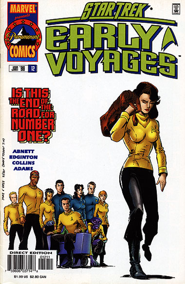
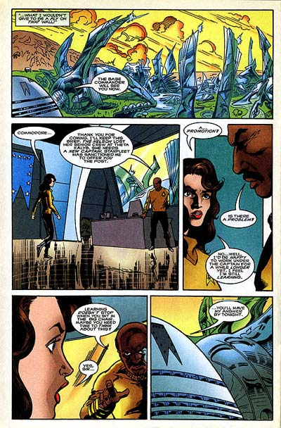

|


|
Gnese
| Episdios I Reflexes
| Palavras do autor | Palavras
do artista Star Trek
Early Voyages, n 12 janeiro de 1998  Histria: Dan Abnett e Ian Edginton Material produzido por Salvador Nogueira para o Trek Brasilis
Data Estelar: 389.4 Sinopse: A Enterprise e a Nelson esto em reparos na base estelar de Algol II, aps o violento confronto com os Chakuuns. Pelo menos a investida conseguiu pr fim ao conflito entre a Assemblia Tholiana e a Federao. Enquanto o engenheiro Grace coordena os esforos de recuperao da nave, Pike se defronta com a responsabilidade de escrever condolncias s famlias das vtimas da batalha. Enquanto alguns oficiais tiram licena em Algol, planeta conhecido por suas incrveis cidades de vidro, Pike e Boyce comentam sobre o que o comodoro Strickland pode estar querendo com a Nmero Um, ao cham-la para conversar na superfcie do planeta. A Nmero Um, entretanto, no est menos apreensiva, quando descobre que Strickland lhe chamou para oferecer o comando da Nelson, que perdeu sua tripulao snior na batalha contra os Chakuuns. A primeiro-oficial ainda no estava se sentindo pronta para a promoo, desejando permanecer mais tempo a bordo da Enterprise sob o comando de Pike. Insegura de que rumo seguir, ela promete ao comodoro que ter a resposta at o fim da noite. Ainda na superfcie, Colt e Tyler visitam o lugar conhecido como Poo dos Amanhs, onde os antigos habitantes de Algol prediziam o futuro, h mais de 10 mil anos. Eles encontram uma pequena esfera que, segundo a lenda, seria capaz de mostrar o futuro pessoa que o segurasse. Ao segurar a esfera de vidro, Tyler se viu no futuro, mais velho, comandando uma nave estelar. Embora ele no revele sua viso a Colt, ela percebe que ele viu algo e fica incomodada por no conseguir observar seu prprio futuro. De volta Enterprise, Pike est preparando para descer superfcie de Algol para licena quando recebe ordens secretas do Comando da Frota Estelar, que obrigam ele mesmo, Spock e Boyce partirem em uma misso confidencial. Os rumores correm soltos a bordo da Enterprise sobre a promoo da Nmero Um, mas ela revela que decidiu permanecer com a nave, recusando a capitania. Pike diz que ter de partir, e que ela estar no comando da nave, mas ser supervisionada por um oficial enviado pela Frota --ningum menos que o almirante Robert April, o primeiro comandante da Enterprise. Tyler e Colt voltam nave, e a ordenana traz secretamente o artefato do Poo dos Amanhs. Ela est intrigada com as estranhas leituras de tquions detectadas por seu tricorder. Quando ela decide excitar as partculas para ver o que acontece, ela desaparece, para desespero de Tyler. Quando ela volta a aparecer, continua a bordo da Enterprise, mas mal d dois passos e cercada por dois oficiais da Frota Estelar de vrias dcadas aps seu desaparecimento, dizendo que ela est presa, por estar em uma rea restrita. Continua...  Comentrios "Futures, Part I" comea de forma bem convencional, desenvolvendo para a Nmero Um o dilema de abandonar a Enterprise ou perder a chance de ganhar seu prprio comando. Nesse sentido, o segmento lembra muito a mesma situao enfrentada por William Riker, em "The Best of Both Worlds". Entretanto, as semelhanas param por a. Diferentemente do que ocorre no episdio da Nova Gerao, aqui temos muito mais chance de observar a reao da tripulao ao dilema da Nmero Um. Isso cobre desde o que foi visto em "The Best of Both Worlds", com o subordinado imediato cobiando a posio de primeiro-oficial (em A Nova Gerao, era Shelby; aqui Mohindas) at as discusses de Pike com seu engenheiro sobre quando a oficial decidiria contar ao capito sobre a proposta do comodoro Strickland. Nesse sentido, a histria faz muito mais para desenvolver os personagens e o esprito de camaradagem da tripulao que o episdio da Nova Gerao fez por Riker e pela tripulao da Enterprise-D. Agora, o que no se pode negar que parece ser bastante bvio que a Nmero Um vai acabar no deixando a Enterprise. Se por um lado, o enredo bom para desenvolver o personagem, ele peca pela alta previsibilidade. Por sorte, a histria no depende somente disso para se sustentar. O enredo abre trs diferentes fronts: um com a misso secreta de Pike, outro com a relao da Nmero Um com o almirante April e um terceiro com a estranha aventura de Colt com o Poo dos Amanhs. Nenhum dos trs ficar sem ser abordado pelos roteiristas, o que oferecer a maior serializao das histrias j feita pela revista, s cortada por seu abrupto cancelamento. O fluxo natural exige que a primeira questo a ser abordada seja a da ordenana Colt --onde ocorre o "cliffhanger" para a prxima edio. Embora os fs j antecipem que a ordenana foi parar algumas dcadas no futuro, na poca dos filmes da Srie Clssica, ningum poderia imaginar a surpresa que os roteiristas estariam planejando... Resumindo, "Futures, Part I" foi uma histria puramente de preparao. Abriram-se trs enredos e agora s esperar para ver como eles, um a um, vo se fechando. Sem dvida foi um belo comeo. Mas, por enquanto, s um comeo...
|